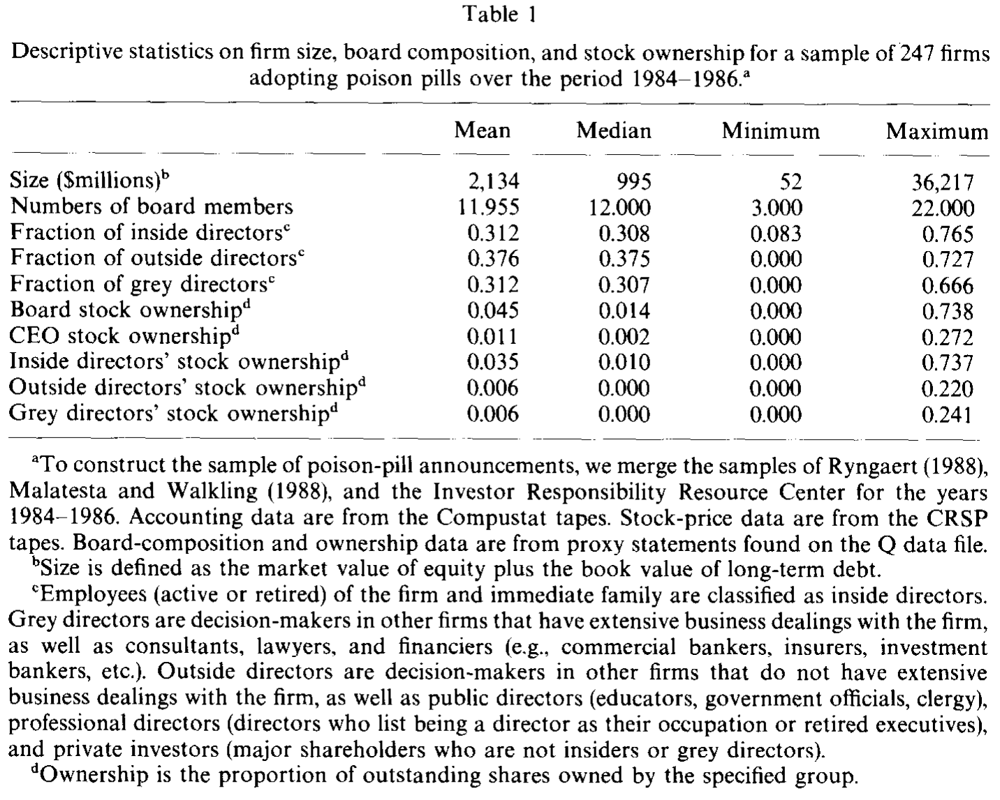
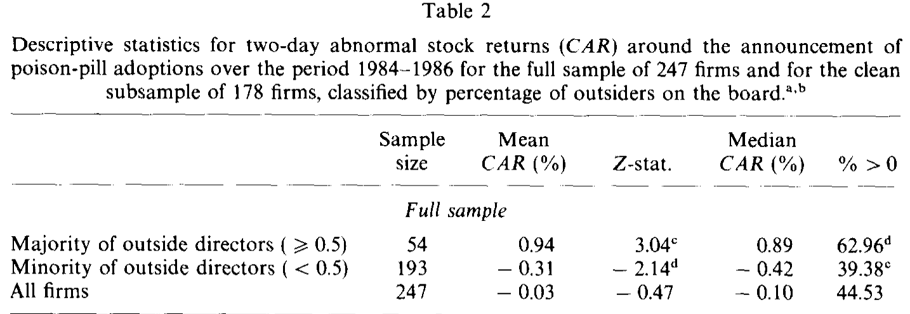
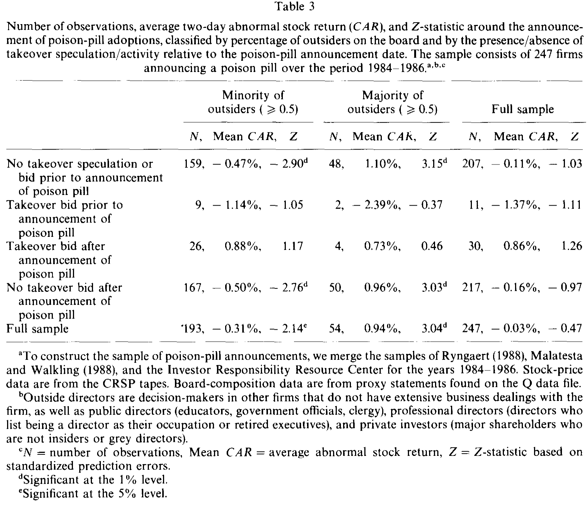
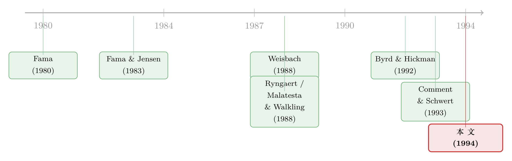

董事会里坐着谁，决定了一颗「毒丸」是解药还是毒药
本文读的是 Brickley, Coles & Terry (1994, Journal of Financial Economics)：同样是宣布一颗「毒丸」，当董事会里外部董事过半时，市场平均给出 +0.94% 的正反应；当外部董事不到半数时，反应是 −0.31% 的负值——而这道符号的翻转，几乎全由一类人撑起：从别的公司退休的高管。
1 一颗「毒丸」，两种读法
先讲一个让人有点为难的场景。
一家上市公司的董事会，在某个普通的工作日，悄悄通过了一项「毒丸」(poison pill) 计划——一种当有人敌意收购、买够一定股份时就自动触发、把收购方的持股严重稀释掉的反收购条款。注意两个细节：第一，毒丸是董事会说了通过就通过的，不需要股东投票；第二，它既可能保护股东（让董事会在控制权之争里有底气替你抬价），也可能伤害股东（让赖着不走的管理层把收购者挡在门外）。
于是问题来了：当你在报纸上读到「某公司宣布采用毒丸」时，你该高兴，还是该担心？
答案，取决于你相不相信坐在那间会议室里的那群「外人」。
这就是本文真正咬住不放的那一个核心问题：外部董事 (outside directors) 到底是替股东办事，还是早就被管理层收编了？ 这是一桩公司治理里争论了几十年的老公案。一派人（如 Fama, 1980；Fama 与 Jensen, 1983）认为，外部董事出于声誉的顾虑、出于怕吃官司的恐惧，会尽心替股东盯着管理层；另一派人（如 Mace, 1986；后来还有 Jensen, 1993）则反唇相讥：董事是谁请进来的？还不是 CEO？再说这些非管理层董事手里那点股票少得可怜，他们凭什么跟管理层离心？
吵了这么久，谁也说服不了谁。原因其实在于：「外部董事到底站哪边」这件事，太难直接观测了。你不能把董事会拉去做问卷，也不能假装发起一场敌意收购看他们怎么反应。
而本文三位作者的聪明，恰恰在于他们找到了一台天然的「测谎仪」——毒丸。
2 为什么是毒丸：一个近乎完美的测试台
接着，一个自然的问题是：拿毒丸来检验「外部董事站哪边」，凭什么比别的事件更好？
理由有三层，环环相扣：
第一，毒丸是模棱两可的。 它既可能利好（提高被收购的概率、并在收购中替股东争取更高的价），也可能利空（董事会更可能阻挠一桩好收购）。正因为它的好坏不确定，市场的初始反应才会真正取决于「这届董事会会怎么用这颗毒丸」。
第二，毒丸由董事会单方决定，绕过了股东投票。 这意味着，董事会的真实倾向不会被一次股东投票「洗白」掉——它直接暴露在这个决策里。
第三，也是最关键的一步——市场能观测到董事会的构成。 既然外部董事占多少席是公开信息（写在委托书里），那么「外部董事是否真的代表股东」这件事，就应该被立刻定价进毒丸宣布时的股价反应里。
把这三层叠在一起，作者就能写出两个针锋相对、且可被数据证伪的假设：
- 管理层利益假设 (management-interest hypothesis)：外部董事被内部人控制，两类董事没有实质区别。那么不论好消息（收购更可能）还是坏消息（管理层自保），都不该随外部董事比例变化。结论：股价反应与董事会构成无关。
- 股东利益假设 (stockholder-interest hypothesis)：外部董事代表股东。当董事会被外部董事控制时，市场知道这颗毒丸将被用来在控制权之争中替股东「榨」出最高价——好消息在、坏消息消失，股价反应应当为正；而当外部董事不足半数时，市场吃不准董事会会怎么反应，利好就可能被「管理层要自保」的利空抵消掉。
注意这里推理的精巧：股东利益假设并不简单地预测「外部董事越多、反应越好」的单调线性关系，而是预测在过半 (majority) 这道门槛附近，会出现一道符号的断裂。这一点，后面会被数据漂亮地证实。
把它想成一道「条件期望」的题：同样一颗毒丸，落在不同构成的董事会手里，市场对「它将来会被怎么用」的预期是不同的。事件研究法 (event study) 量的，正是这份预期之差。
3 识别策略：一台两天的「测谎仪」
那么，怎么把这份「预期之差」量出来？
作者用的是公司金融里最经典的工具——事件研究 (event study)，测算毒丸宣布前后的累计异常收益 (cumulative abnormal return, CAR)。
具体做法是这样的。异常收益基于市场模型 (market model) 计算，估计窗口取事件日之前的 t = −244 到 t = −6，市场基准用 CRSP 等权指数（含股利）。事件窗口是两天：财经媒体报道毒丸的当天，以及它的前一个交易日（t = 0）。统计检验用的是标准化预测误差及其对应的 Z 统计量（方法上沿用 Dodd 与 Warner, 1983 的附录）。
关键的「识别」不在于事件研究本身——毒丸的平均效应早有人算过——而在于横截面上的切分：把样本按「外部董事是否过半」分成两组，看两组的 CAR 是否系统性地不同。如果两组没差别，管理层利益假设胜；如果过半组显著为正、不过半组显著为负，股东利益假设胜。
这里有一个容易被忽略、却生死攸关的细节：怎么定义「外部董事」。 作者没有偷懒地把所有非雇员都算成外部董事，而是用了一套更细的分类（借鉴了 Baysinger 与 Butler, 1985 等）：
- 内部董事 (inside)：在本公司任职（在职或退休）的人及其直系亲属。
- 灰色董事 (grey)：与公司有密切业务往来、但非全职雇员的人——比如和公司有大量生意往来的其他公司决策者，以及顾问、律师、商业银行家、保险与投行人士。之所以把这些人单列，是因为已有证据（Brickley, Lease 与 Smith, 1988；Van Nuys, 1993）表明，银行、保险这类股东在反收购条款上更倾向于站在管理层一边。
- 外部董事 (outside)：与公司没有大量业务往来的其他公司高管，加上公共董事（教育界、政府、神职人员）、职业董事（以「董事」为职业者，或退休的企业高管），以及非内部、非灰色的大股东（私人投资者）。
这个三分法，是整篇论文的「手术刀」。后面你会看到，正是这把刀，把一个被笼统定义掩盖掉的结果给切了出来。
4 数据
样本是 1984–1986 年间采用毒丸的 247 家公司。为什么卡这三年？因为已有证据表明，毒丸引发的负面股价反应在这一时期最为显著——而越是反应剧烈的年份，越能让市场对「外部董事」的态度暴露得更清楚。
数据来源是把 Malatesta 与 Walkling (1988)、Ryngaert (1988) 两家的样本，再加上投资者责任研究中心 (IRRC) 的反收购活动数据库合并而成。每家样本公司都满足：在 CRSP 日收益磁带上有数据、在 Compustat 上有财务数据、在 Q 数据文件里能找到毒丸宣布前一财年的委托书、且宣布被财经媒体（《华尔街日报》《纽约时报》或道琼斯/华尔街通讯社）报道过。样本高度集中在 1986 年：4 家（1.6%）在 1984 年，28 家（11.3%）在 1985 年，215 家（87%）在 1986 年。
委托书里逐一识别每位董事的职业，据此分类。再按 Ryngaert (1988) 的标准把观测分为「干净」与「受污染」——若两天窗口内还冒出股利变动、拆股、盈余公告、收购要约等可能搅局的消息，就算受污染。247 家里有 178 家在窗口内是干净的。
来看一眼样本长什么样。

Table 1
如表 1 所示，样本公司的中位规模约 9.95 亿美元（规模＝股权市值＋长期债务账面值），中位董事会 12 人，三类董事各占约三分之一，但横截面差异极大——外部董事的占比从 0 一路铺到近四分之三。董事会整体持股中位数只有 1.4%，且绝大部分集中在内部董事手里；外部与灰色董事的持股都低得可怜（均值各约 0.6%）。在外部董事内部，「其他公司高管（与本公司无业务往来）」占的席位最多，平均 17.7%；公共董事约 10%；职业董事/退休高管约 8%；私人投资者只占可怜的 1.9%。记住这几个小数——稍后它们里有一个会突然变得无比重要。
5 主要结果：符号在「过半」那道线上翻转
然后，揭晓那个核心结果。
先看全样本和干净子样本的整体反应：两组的两天 CAR 都只是轻微为负、且不显著（全样本均值 −0.03%，干净样本 −0.04%）。如果故事到此为止，你会得出「毒丸没什么影响」的平淡结论——这正是只盯着平均数会犯的错。
但真正关键的一步，是把样本按外部董事是否过半切开。

Table 2
如表 2 所示，符号在「过半」这道线上干净利落地翻转了：
- 外部董事过半：全样本平均 CAR
+0.94%（Z = 3.04），干净样本+1.16%（Z = 3.13），两者在 1% 水平显著。中位数都约0.9%，约三分之二的收益为正。 - 外部董事不过半：全样本平均 CAR
−0.31%（p 值 0.03），干净样本−0.45%（p 值 0.00），中位数为负，正收益占比不到 40%。
作者还正式检验了两个子样本的 CAR 是否相等——无论用非平衡 ANOVA 的 F 检验，还是 Wilcoxon 秩和检验，都在 1% 水平拒绝了「两组相同」的原假设。也就是说：一颗毒丸是利好还是利空，真的取决于董事会里坐着谁。这正是股东利益假设的预言，而管理层利益假设被否决了。
于是反转出现了——但不是在这里，而是在「定义」上。
作者发现，如果改用财经媒体那种笼统的定义——把所有非雇员都算成外部董事——那么 247 家里除了 15 家之外，董事会都「过半」是外部董事，结果是：不论是否过半，毒丸的股价反应都不显著。换句话说，笼统的定义会把这个结果整个抹掉。这与 Byrd 与 Hickman (1992) 的发现如出一辙：用更挑剔的定义，外部董事比例和收购方收益正相关；用宽泛的定义，关系就消失了。
这个对照，本身就是一记重锤：它说明「外部董事有没有用」这个争论之所以悬而未决，一部分恰恰是因为大家用的「外部董事」根本不是同一拨人。
6 谁在撑起这道翻转？退休的「外人」
接着是全文最有味道的一笔。
作者把外部董事再往下拆，想看清这道符号翻转究竟由哪一类人驱动。答案出人意料又意味深长：结果主要由那些「从别的公司退休的高管」撑起来。
为什么是他们？想想看：一个仍在别处当 CEO 的现任高管，时间和精力都被自己的公司占满；而一个退休的前任 CEO，既有管理大公司的经验和判断力，又有声誉要维护，还相对超脱——他既看得懂收购这盘棋，又没那么多牵绊。文中举的例子至今读来仍有分量：前宝洁掌门 John Smale 在通用汽车董事会主导了对 Robert Stempel 的罢免，前美孚的 Rawleigh Warner 推翻了美国运通的 James Robinson III，前强生 CEO James Burke 则在 IBM 罢免 John Akers 中扮演了关键角色。这些「退休的外人」，恰恰是近年几桩著名 CEO 更替的操盘手。
（关于退休/外部董事的声誉激励，可参见《炒掉 CEO，董事是英雄还是「帮凶」？——股东用反对票投出了答案》；关于独立董事在收购中是否真能为目标公司股东争取价值，另见《do-independent-directors-enhance-target-shareholder-wealth》。）
那么，毒丸最终被怎么用了？股东利益假设还有一个推论：外部董事越多，毒丸越可能被用来给股东争取更高的价，因此后续控制权之争更可能演变成一场竞价拍卖 (auction) 而非被直接挡掉。

Table 3
表 3 把 CAR 按董事会构成、以及毒丸宣布前后是否有收购传闻/活动再做了交叉。可以看到：在宣布前没有任何收购传闻或要约的那 207 家里，外部董事不过半的子样本 CAR 为 −0.47%（Z = −2.90），而过半的子样本为 +1.10%（Z = 3.15）——符号的翻转在「事前最干净、最没有收购预期」的那组里反而最清晰。样本中共有 41 家（16.6%）在「宣布前一个月到宣布后一年」内被发起了控制权竞价，其中 11 起在宣布之前、30 起在之后。与拍卖概率随外部董事比例上升的预测一致：外部董事控制的董事会，更像是在替股东抬价，而不是在替管理层关门。
7 文献脉络
把这篇论文放回它所处的那条河流里看，会更清楚它的位置。
这条脉络的源头，是 Fama (1980) 和 Fama 与 Jensen (1983) 奠定的代理理论：在所有权与控制权分离的现代公司里，外部董事被设想为一种缓解代理冲突的内部机制。但「设想」归「设想」，它到底灵不灵，需要实证来回答。
接着，一批实证研究开始从不同侧面给外部董事「验货」。Weisbach (1988) 发现外部董事主导的董事会更可能在业绩差时换掉 CEO；同一年，Ryngaert (1988) 与 Malatesta 与 Walkling (1988) 各自记录了毒丸引发的负面股价反应（尤其是最严苛的那类毒丸）——这两篇恰恰为本文提供了样本与方法的基石。再往后，Byrd 与 Hickman (1992) 在要约收购里发现，外部董事比例和收购方收益正相关，但只在用挑剔的定义时才成立——这个「定义敏感性」的伏笔，被本文接了过去并发扬光大。

到了 1993 年，Comment 与 Schwert (1993) 把毒丸的事件研究证据更新到 1991 年，发现毒丸的负面反应主要集中在它刚问世的 1984 年，之后多数不显著（除非市场本就预期收购将至）——这恰好解释了本文为何要把样本卡在 1984–1986。（这条线的后续讨论，可参见《poison-or-placebo-evidence-on-the-deterrence-and-wealth》。）
本文 (1994) 就站在这个节点上：它不去追问「毒丸平均而言好不好」，而是反过来用毒丸当探针，去回答「外部董事好不好」——并且通过精细的董事分类，把一个被平均数和笼统定义掩盖掉的横截面结构，干净地切了出来。
8 评论与延伸（Q&A + 研究方向）
(a) 几个可能的疑问
Q：董事会构成是公司自己「选」出来的，会不会是内生的，从而 CAR 的差异其实由别的东西驱动？
这是最该担心的识别问题。董事会构成不是随机分配的——更可能被收购、治理更好的公司，也许本就倾向于请更多外部董事。本文是横截面的事件研究，并没有外生冲击来切断这种内生性，所以严格说它识别的是「条件相关」而非「因果」。作者的辩护在于：股价反应是市场在事件当天对「这届董事会会怎么用毒丸」的预期，而董事会构成在事前就已确定、且公开可观测，因此把它作为条件变量是自洽的。但「为什么这家公司有这样的董事会」这个上游问题，本文没有回答。
Q：为什么不直接看「外部董事比例」这个连续变量，而要切成「过半/不过半」？
因为理论预测的本就不是单调线性关系，而是在「过半」这道控制权门槛上的断裂——只有当外部董事掌握了多数票，市场才确信毒丸会被用来替股东榨价。作者也指出，关系在整个区间上未必单调。用门槛切分，正是为了对准这个理论断点。
Q：整体平均 CAR 接近零且不显著，是不是说明毒丸其实「没用」？
恰恰相反，这正是本文想纠正的误读。接近零的平均数，是
+0.94%（过半）和−0.31%（不过半）相互抵消的结果。只盯着平均数，会把一个真实而重要的横截面差异「平均」掉。这也是为什么作者反复强调：focusing exclusively on the average masks important cross-sectional variation。
Q：「灰色董事」单列出来，会不会只是作者为了凑出结果的人为操作？
不是事后凑的。把银行家、保险、律师、有业务往来的其他公司高管单列为「灰色」，有事前的理论与证据支撑（Brickley, Lease 与 Smith, 1988；Van Nuys, 1993 都发现这类股东在反收购议题上更偏向管理层）。而且，正是这套分类让本文能复现 Byrd-Hickman 的「定义敏感性」——若用笼统定义，结果消失。分类的合理性，反过来被这个一致性所佐证。
Q：结果「主要由退休高管驱动」，会不会只是某个小子样本的偶然？
这是一个合理的担心。退休高管/职业董事这一类平均只占约
8%的席位，子样本一旦再切就更小，统计功效有限，偶然性不能完全排除。但它与外部独立的经济叙事（退休高管有经验、有声誉、相对超脱）以及当时几桩著名 CEO 更替的事实相互印证，使这个结论更可信——尽管它更像是一个值得后续大样本检验的「有趣线索」，而非铁案。
Q：这套 1980 年代的证据，今天还成立吗？
不一定能直接外推。Comment 与 Schwert (1993) 已表明毒丸的市场反应随时间显著衰减；此后董事会独立性、机构投资者维权、交错董事会等制度环境都大变。本文的价值更多在于方法与逻辑——用一个模棱两可、且绕过股东投票的董事会决策，去识别董事的立场——这套思路至今仍可迁移。
(b) 几个可能的研究问题与提案
1. 把同一逻辑搬到公司债与信用市场 - 【经济故事】毒丸、反收购条款对股东和债权人的利益往往是相反的：挡住收购可能保护了在位债权人的求偿权，却损害了股东。那么当外部董事过半、毒丸更可能被用来「替股东抬价」时，债券价格会不会反而下跌？股—债反应的符号差，可以更干净地分离「股东利益」与「债权人利益」两条渠道。 - 【可行性】中。需要把董事会构成数据（如今可用 ISS/BoardEx）与 TRACE 公司债日内价格、以及反收购事件对齐。识别仍受董事会内生性困扰，但股—债反应之差在同一事件、同一公司内比较，能部分抵消公司层面的混淆。
2. 外资持有人与董事会立场的交互 - 【经济故事】外国机构投资者通常缺乏本地的人脉与「关系」纽带，可能更依赖正式的董事会独立性来保护自己。那么外部董事过半带来的正向反应，是否在外资持股更高的公司里更强？这把本文的「谁在董事会」延伸到「谁在股东名册」。 - 【可行性】中。需要 13F/外资持股数据与董事会构成、治理事件的匹配。可借鉴本博客中关于外资持有人是否真有信息劣势/是否「蝗虫」的讨论思路（见《外资真是「蝗虫」吗？》），但外资偏好本身也内生于公司治理，识别需谨慎。
3. 退休高管董事的「声誉资本」定价 - 【经济故事】本文暗示「退休高管」这一类外部董事特别有用。能否更直接地度量他们的声誉资本（如曾任 CEO 的公司规模、过往治理战绩），并检验市场对毒丸/收购的反应是否随这位董事的声誉而变？这把「外部 vs 内部」的二分，细化为「声誉的连续刻度」。 - 【可行性】高。BoardEx 提供详尽的董事职业履历，构造声誉指标可行；事件研究方法成熟。主要挑战是声誉与被聘任本身的内生性。
4. 用交错董事会改革或法律变更做外生冲击 - 【经济故事】本文最大的软肋是董事会构成的内生性。若能找到一次外生改变董事会独立性的冲击（如交易所上市规则强制独立董事过半、或某州公司法变更），就能更可信地估计「独立性 → 反收购决策的财富效应」的因果。 - 【可行性】中。2002 年后 SOX 与交易所规则提供了准自然实验，但同期变化太多，平行趋势难保证；需要精心设计的双重差分 (difference-in-differences, DiD) 与对照组。
9 我的判断与参考文献
贡献。 这篇论文的精妙，不在于用了多复杂的方法（事件研究在 1994 年早已是标配），而在于把一个难以观测的治理问题，翻译成了一个可被市场定价、可被横截面切分的检验。毒丸的三重特性——模棱两可、绕过股东投票、董事会构成公开可观测——被作者用足，干净地把「外部董事代表股东」从一堆相互矛盾的叙述里实证出来。尤其是对「定义敏感性」的展示（笼统定义会抹掉结果），以及对「退休高管」这一驱动力的识别，让全文超越了「又一篇外部董事有用」的平庸结论。
对识别的担忧。 最根本的是董事会构成的内生性：本文识别的是条件相关，而非因果；「为什么这家公司有这样的董事会」这个上游问题悬而未决。其次，「退休高管驱动」依赖的子样本偏小，统计功效有限，更像有力的线索而非定论。再者，样本高度集中在 1986 年、且毒丸反应此后显著衰减，外推到今天需格外小心。
后续想看到什么。 我最想看到的，是把这套逻辑搬到股—债联合反应上：用同一事件里股东与债权人反应的符号差，去分离「替股东抬价」与「损害债权人」两条渠道——这恰好落在公司债与信用市场的交叉口，也是当下数据（TRACE + BoardEx）已经足以支撑的方向。
参考文献
- Baysinger, B. D., & Butler, H. (1985). Corporate governance and the board of directors: Performance effects of changes in board composition. Journal of Law, Economics, and Organization 1, 101–124.
- Brickley, J. A., Coles, J. L., & Terry, R. L. (1994). Outside directors and the adoption of poison pills. Journal of Financial Economics 35(3), 371–390.
- Brickley, J. A., & James, C. M. (1987). The takeover market, corporate board composition, and ownership structure: The case of banking. Journal of Law and Economics 30, 161–181.
- Brickley, J. A., Lease, R. C., & Smith, C. W. (1988). Ownership structure and voting on antitakeover amendments. Journal of Financial Economics 20, 267–291.
- Byrd, J., & Hickman, K. (1992). Do outside directors monitor managers? Evidence from tender offer bids. Journal of Financial Economics 32, 195–221.
- Comment, R., & Schwert, G. W. (1993). Poison or placebo? Evidence on the deterrent and wealth effects of modern antitakeover measures. Working paper, University of Rochester.
- Dodd, P., & Warner, J. B. (1983). On corporate governance: A study of proxy contests. Journal of Financial Economics 11, 401–438.
- Fama, E. F. (1980). Agency problems and the theory of the firm. Journal of Political Economy 88, 715–732.
- Fama, E. F., & Jensen, M. (1983). Separation of ownership and control. Journal of Law and Economics 26, 301–325.
- Jensen, M. C. (1993). Presidential address: The modern industrial revolution, exit and the failure of internal control systems. Journal of Finance 48, 831–880.
- Mace, M. L. (1986). Directors: Myth and reality. Harvard Business School Press.
- Malatesta, P. H., & Walkling, R. A. (1988). Poison pill securities: Stockholder wealth, profitability, and ownership structure. Journal of Financial Economics 20, 347–376.
- Rosenstein, S., & Wyatt, J. G. (1990). Outside directors, board independence, and shareholder wealth. Journal of Financial Economics 26, 175–192.
- Ryngaert, M. (1988). The effect of poison pill securities on shareholder wealth. Journal of Financial Economics 20, 377–417.
- Van Nuys, K. (1993). Corporate governance through the proxy process: Evidence from the 1989 Honeywell proxy solicitation. Journal of Financial Economics 34, 101–132.
- Weisbach, M. S. (1988). Outside directors and CEO turnover. Journal of Financial Economics 20, 431–460.